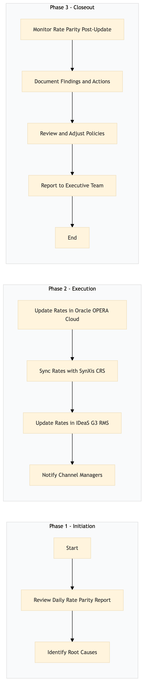

| Role | Steps |
|---|---|
| Revenue Manager | 1.1 1.2 2.1 2.2 2.3 2.4 3.1 3.2 3.3 3.4 |
| Step | Name | Role | System | Input | Output | KPI | Dec? | Exc? | Pain Point / Risk |
|---|---|---|---|---|---|---|---|---|---|
| 1.1 | Review Daily Rate Parity Report | Revenue Manager | Oracle OPERA Cloud | Daily Rate Parity Report | List of Discrepancies | Less than 30 min | Y | N | Handling large volumes of discrepancies manually. |
| 1.2 | Identify Root Causes | Revenue Manager | Oracle OPERA Cloud, IDeaS G3 RMS | List of Discrepancies | Root Cause Analysis Report | Less than 1 hour | Y | N | Determining the underlying issues causing rate discrepancies. |
| 2.1 | Update Rates in Oracle OPERA Cloud | Revenue Manager | Oracle OPERA Cloud | Root Cause Analysis Report | Updated Rate Sheet | Less than 30 min per update | N | Y | Ensuring all updates are correctly applied to avoid further discrepancies. |
| 2.2 | Sync Rates with SynXis CRS | Revenue Manager | SynXis CRS, Oracle OPERA Cloud | Updated Rate Sheet | Confirmation of Sync | Less than 15 min | N | Y | Maintaining real-time synchronization between systems. |
| 2.3 | Update Rates in IDeaS G3 RMS | Revenue Manager | IDeaS G3 RMS, Oracle OPERA Cloud | Updated Rate Sheet | Confirmation of Update | Less than 15 min | N | Y | Ensuring consistent rate updates across multiple systems. |
| 2.4 | Notify Channel Managers | Revenue Manager | Email, Marriott Bonvoy CRM | Updated Rate Sheet | Notification Email | Less than 30 min | N | Y | Effective communication with channel managers to ensure they are aware of changes. |
| 3.1 | Monitor Rate Parity Post-Update | Revenue Manager | Oracle OPERA Cloud, SynXis CRS, IDeaS G3 RMS | Updated Rate Sheet | Post-Update Report | Less than 1 hour | Y | N | Continuous monitoring to ensure no new discrepancies arise. |
| 3.2 | Document Findings and Actions | Revenue Manager | Oracle OPERA Cloud, Microsoft Power BI | Post-Update Report | Rate Parity Monitoring Log | Less than 30 min | N | Y | Maintaining accurate documentation for audit and future reference. |
| 3.3 | Review and Adjust Policies | Revenue Manager | Oracle OPERA Cloud, IDeaS G3 RMS | Rate Parity Monitoring Log | Updated Rate Management Policy | Less than 1 hour | Y | N | Adapting policies to prevent future rate discrepancies. |
| 3.4 | Report to Executive Team | Revenue Manager | Microsoft Power BI, Email | Updated Rate Management Policy | Executive Report | Less than 1 hour | N | Y | Communicating findings and recommendations to senior management. |
The Rate Parity Monitoring & Enforcement process ensures that all hotel rates are consistent across various distribution channels and systems to maximize revenue.